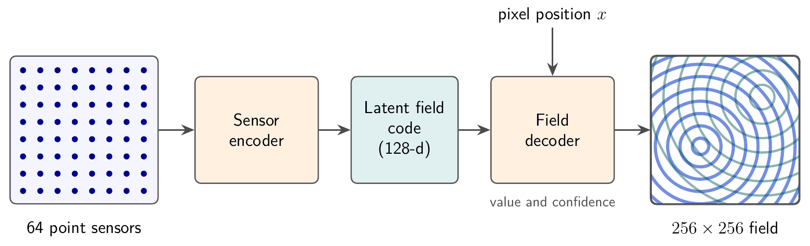
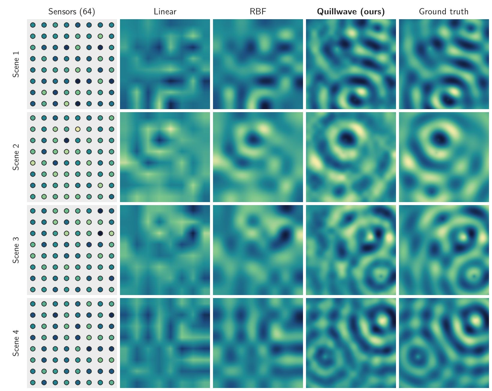
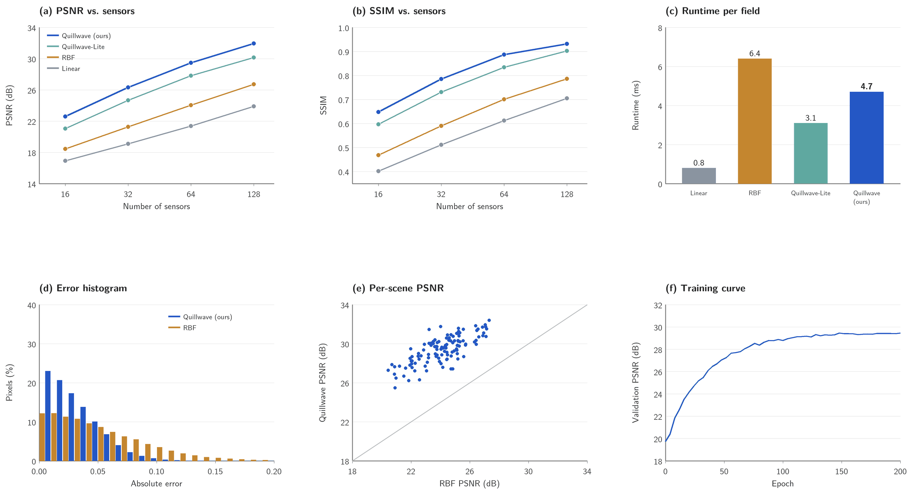

Abstract
Video
Transcript of on-screen captions
The video has no speech; these are its on-screen captions.
- [0:01] Quillwave is a fictional project, made as synthetic test material.
- [0:06] The task: recover a full 256x256 ripple field from only 64 point sensors.
- [0:10] Simple interpolation blurs the wave fronts between the sensors.
- [0:14] Quillwave encodes the sensor readings into a compact latent field code.
- [0:19] A field decoder then predicts a value and a confidence at every pixel.
- [0:24] Left: linear interpolation of the sensors. Right: Quillwave.
- [0:28] The wave fronts stay sharp as the sources move.
- [0:32] On RippleBench-Synthetic, Quillwave reaches 29.46 dB PSNR.
- [0:35] That is 5.41 dB above radial-basis interpolation.
- [0:39] Limitations: all results are on synthetic fields only.
- [0:42] The baselines are not compute-matched, and the confidence map is not calibrated.

Method

The 64 sensors sit on a regular 8x8 grid. A sensor encoder maps their readings to a 128-dimensional latent field code, and a coordinate-based field decoder predicts the field value (and a confidence) at every pixel. Quillwave-Lite is the ablation without the latent code: its decoder is conditioned on the raw readings instead. The model has 1.2M parameters and is trained on 2000 synthetic fields for 200 epochs.
Qualitative comparison

Comparison clips
Results
On RippleBench-Synthetic with 64 sensors, Quillwave reaches 29.46 dB PSNR and 0.887 SSIM. That is 5.41 dB above radial-basis interpolation, the best baseline, a 71.2% reduction in mean squared error, and it runs 1.36x faster than that baseline. Linear interpolation is the fastest method. Quillwave also has the highest PSNR at every sensor count tested.
Table 1. Reconstruction quality on RippleBench-Synthetic (64 sensors, 256x256 fields, mean over 5 training runs). Higher PSNR and SSIM are better; lower runtime is better.
| Method | PSNR (dB) | SSIM | Runtime (ms) |
|---|---|---|---|
| Linear interpolation | 21.37 | 0.612 | 0.8 |
| Radial-basis interpolation | 24.05 | 0.701 | 6.4 |
| Quillwave-Lite (ablation) | 27.82 | 0.834 | 3.1 |
| Quillwave (ours) | 29.46 | 0.887 | 4.7 |
Table 2. PSNR (dB) against the number of sensors on RippleBench-Synthetic.
| Method | 16 sensors | 32 sensors | 64 sensors | 128 sensors |
|---|---|---|---|---|
| Linear interpolation | 16.92 | 19.10 | 21.37 | 23.88 |
| Radial-basis interpolation | 18.44 | 21.26 | 24.05 | 26.71 |
| Quillwave-Lite (ablation) | 21.03 | 24.67 | 27.82 | 30.15 |
| Quillwave (ours) | 22.58 | 26.31 | 29.46 | 31.94 |

Limitations
- Synthetic fields only. Every result is on RippleBench-Synthetic; no real sensor data was used, and behaviour on real measurements is unknown.
- Baselines are not compute-matched. Quillwave is trained for 3.5 GPU-hours, while the interpolation baselines need no training at all.
- Confidence is not calibration. The per-pixel confidence map has not been checked against observed error rates, so it should not be read as a calibrated probability.
BibTeX
@inproceedings{placeholder2026quillwave,
title = {Quillwave: Sparse-Sensor Reconstruction of Synthetic Ripple Fields},
author = {Ada Placeholder and Ben Example and Cleo Sample},
booktitle = {Proc. FCSV 2026 (Fictional Conference on Synthetic Vision)},
year = {2026},
url = {https://quillwave.example.org/},
note = {Fictional entry for testing}
}